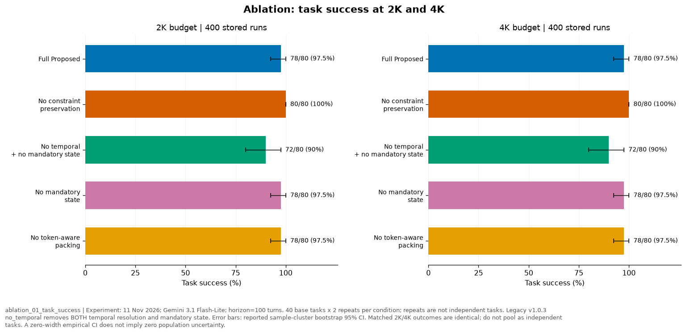
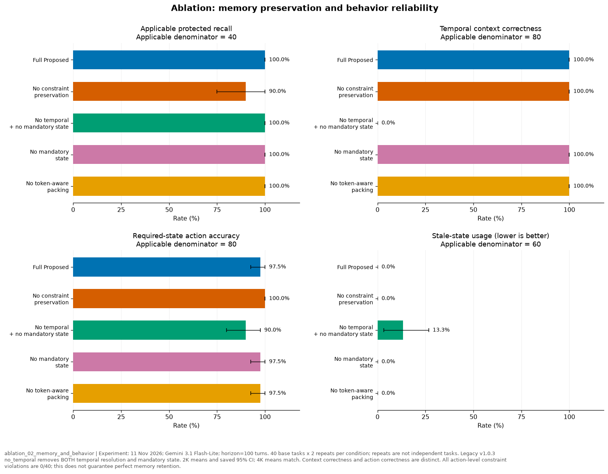
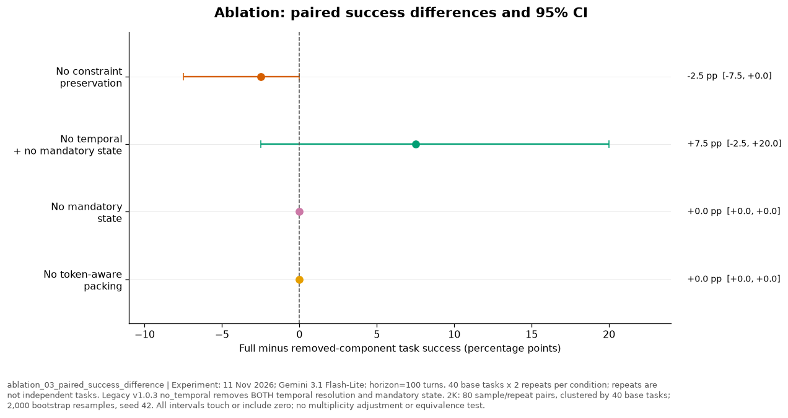
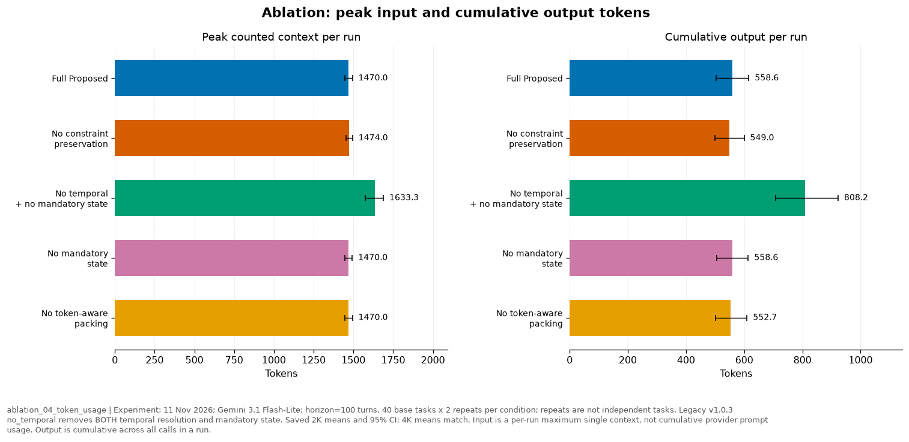
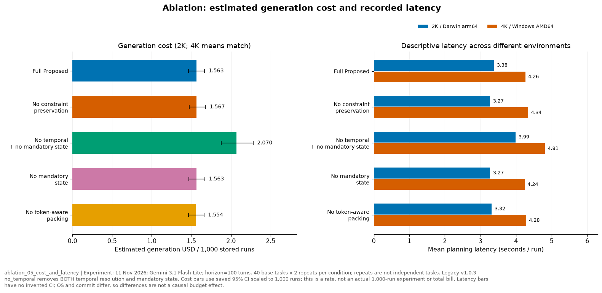
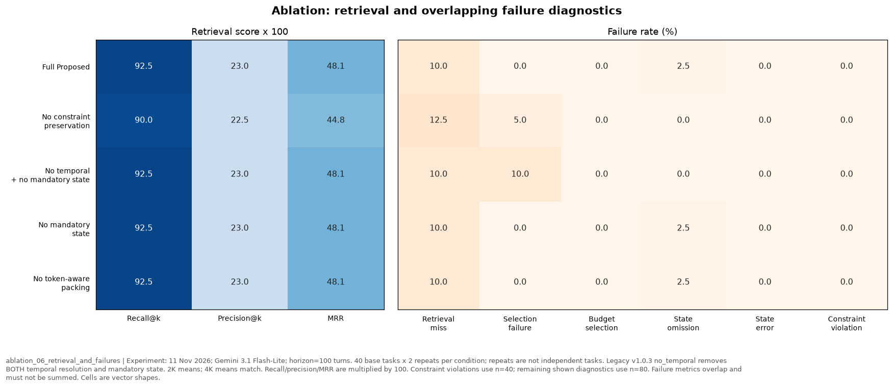
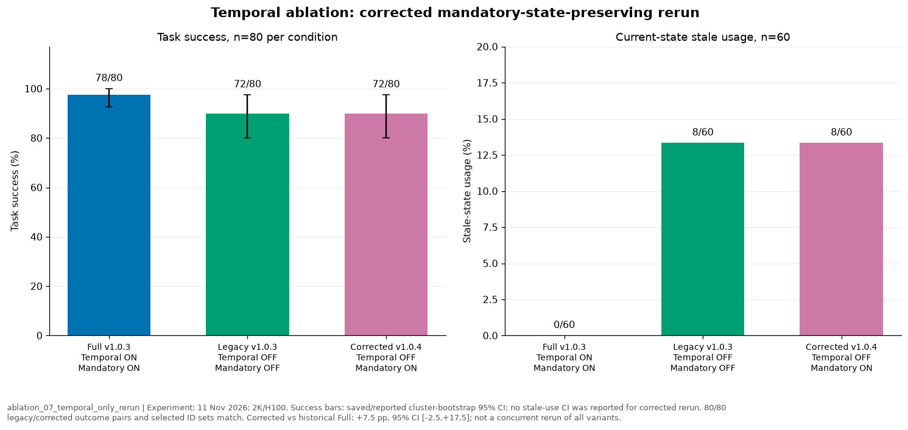

 ablation_01_task_success.svg작업 성공률2K와 4K에서 Full과 네 제거 조건을 비교합니다. 두 예산의 400개 대응 실행은 같은 결과였으며, v1.0.3의 No temporal은 필수 상태 보존도 함께 제거했습니다. SVG 다운로드 · 수치 CSV
 ablation_02_memory_and_behavior.svg기억 보존과 행동 신뢰성보호 기억 회수, 시간 문맥 정확성, 실제 상태 사용, 오래된 상태 사용을 나눠 보여줍니다. 성공률이 높아도 보호 기억 보존이 낮아질 수 있습니다. SVG 다운로드 · 수치 CSV
 ablation_03_paired_success_difference.svgFull 대비 성공률 차이같은 과제와 반복을 맞춘 Full − 제거 조건의 차이입니다. 저장된 짝지은 신뢰구간이 모두 0에 닿거나 포함하므로 확정적 우위나 동등성으로 해석하지 않습니다. SVG 다운로드 · 수치 CSV
 ablation_04_token_usage.svg입력과 출력 토큰왼쪽 입력은 실행별 최대 단일 Context의 평균이고, 오른쪽 출력은 실행 전체 누적 출력의 평균입니다. 입력 곡선을 여러 호출의 누적 입력량으로 읽으면 안 됩니다. SVG 다운로드 · 수치 CSV
 ablation_05_cost_and_latency.svg추정 비용과 지연 시간실행당 생성 비용과 두 실행 환경에서의 지연 시간을 비교합니다. 2K와 4K의 OS·commit이 달라 지연 차이를 예산 효과로 해석하지 않습니다. SVG 다운로드 · 수치 CSV
 ablation_06_retrieval_and_failures.svg검색 성능과 실패 진단초기 검색 점수와 선택·상태·제약 실패를 함께 비교합니다. 실패 지표는 서로 겹칠 수 있으며, 적용 분모는 CSV에 기록했습니다. SVG 다운로드 · 수치 CSV
 ablation_07_temporal_only_rerun.svgTemporal 단독 제거 재실행필수 상태 보존을 복구한 v1.0.4의 Temporal 단독 제거 결과를 기존 조건과 구분합니다. 수정 전후 80쌍의 성공 판정과 최종 선택 기억 집합은 같았지만, 일반적인 기능 불필요성을 입증한 결과는 아닙니다. SVG 다운로드 · 수치 CSV